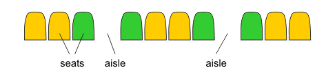

Note: this problem statement contains an image that may not display properly if viewed outside the applet.
When on a long flight, it is often helpful to be in an aisle seat (a seat adjacent to an aisle). This way you don't need to bother another passenger when you need to go to the restroom or take a walk. However, because large airliners are built to hold as many passengers as possible, only a limited number of seats can be aisle seats.
A typical arrangement of 10 seats in a single row with 2 aisles is as follows:

Aisle seats are colored green in the above example (there are four such seats), while center and window seats are colored orange.
All of the seats are equally wide and each aisle has the same width as a single seat. If an airplane's row is wide enough to fit width seats or aisles, and the airline wants exactly seats seats to be fitted in a row, find the arrangement which maximizes the number of aisle seats. A row should be formatted as a string of characters so that seats and aisles are represented by 'S' and '.' (dot) characters, respectively. If there are multiple arrangements which maximize the number of aisle seats, find the lexicographically smallest one (the dot character comes before 'S' in the lexicographical order).
You are to return the required arrangement (or part of it) as a containing no more than 2 s: